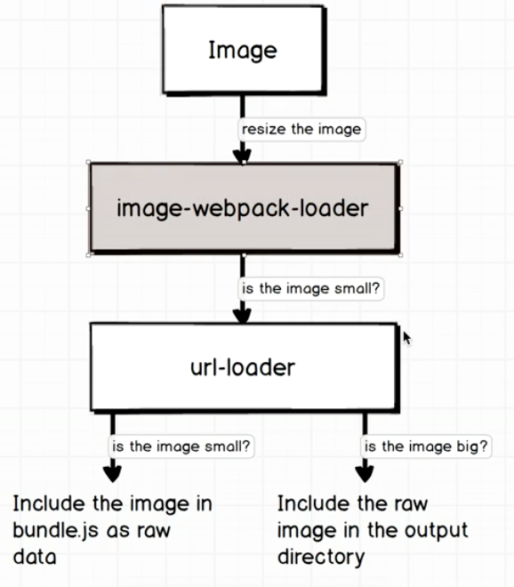

loaders
image-webpack-loader
compress the images
url-loader
depend on the size of image (file size such as 10kb)
decide how to import:
- small than limit: dev image -> base64 string in
bundle.js
- large than limit: dev image -> copy to output folder

config
webpack.config
const config = {
module: {
entry: './src/index.js',
output: {
path: path.resolve(__dirname, 'build'),
filename: 'bundle.js',
},
rules: [
{
test: /\.(jpe?g|png|gif|svg)$/,
use: [
{
loader: 'url-loader',
options: { limit: 40000 } // 40000bytes
},
'image-webpack-loader'
]
]
}
}
image_viewer.js
import big from '../assets/big.jpg'; // big <- path string
import small from '../assets/small.jpg'; // small <- base64 string
const smallImage = document.createElement('img');
smallImage.src = small
const bigImage = document.createElement('img');
smallImage.src = big // wrong path to js modules directory if not set publicPath
./assets/big.jpg -> ./bulid/j3r0j3rj0rjr.jpg
./assets/small.jpgr -> base64 string in ./build/bundle.js